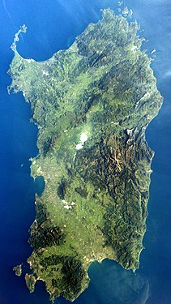

|

|
Sardegna
|
La Sardegna (AFI: /sarˈdeɲɲa/[9]; Sardìgna o Sardìnnia in sardo), la
cui denominazione ufficiale bilingue è Regione Autonoma della
Sardegna / Regione Autònoma de Sardigna[10], è una regione italiana
a statuto speciale di 1 564 885 abitanti[3] con capoluogo Cagliari.
Istituita nel 1948, è divisa amministrativamente in quattro
province, una città metropolitana e 377 comuni. Ha un territorio di
24 090 km² che ne fa la terza regione d'Italia per superficie[11] e
terzultima per densità (65 ab./km²).
|
|